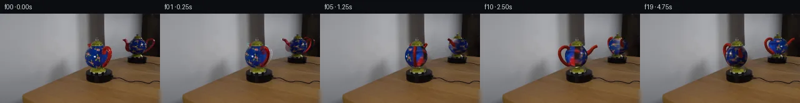

![首帧]()

Round 00
2026-11-05T13:37:29.041786+00:00像素候选变化代码 +358/−0inspection 更新
pixels 5ec93b2a67840a96 · code 0901e30b96fe33ac
查看本轮 generate.py 真实 diff
--- previous/generate.py
+++ current/generate.py
@@ -0,0 +1,358 @@
+"""Photograph-derived pixels and analytic, depth-tested surfaces; no external renderer."""
+from pathlib import Path
+import json
+import numpy as np
+from PIL import Image, ImageDraw
+import cv2
+from scipy.ndimage import map_coordinates, distance_transform_edt, gaussian_filter
+from scipy.interpolate import CubicSpline
+from artifact_io import save
+
+ROOT = Path(__file__).resolve().parent
+SOURCE = np.asarray(Image.open(ROOT / 'first_frame.png').convert('RGB'))
+H, W = SOURCE.shape[:2]
+SS = 4
+rng = np.random.default_rng(121)
+
+# Measured, rotationally symmetric silhouette profiles. Axis remains fixed.
+VIEWS = [
+ dict(name='direct', cx=154.0, cy=69.0, scale=1.0, elev=.12,
+ beta=-45., profile_y=np.array([52,54,58,62,66,70,74,78,82,85,87,88.3]),
+ profile_r=np.array([10.0,12.0,15.0,17.0,18.0,18.0,17.3,15.5,12.4,8.7,5.,0.0]),
+ sign=1, lo=52., hi=88.3),
+ dict(name='mirror', cx=221.2, cy=53.2, scale=.78, elev=.04,
+ beta=27., profile_y=np.array([40.0,42,45,48,51,54,57,60,63,65,66.5,67.5]),
+ profile_r=np.array([9.0,11.2,13.7,15.1,15.5,15.2,13.9,11.8,8.8,5.5,3.,0.0]),
+ sign=-1, lo=40., hi=67.5),
+]
+for view in VIEWS:
+ view['radial'] = CubicSpline(view['profile_y'], view['profile_r'], bc_type='natural')
+
+
+def sample(image, x, y):
+ return np.stack([map_coordinates(image[..., c], [y, x], order=1, mode='nearest')
+ for c in range(3)], axis=-1)
+
+
+def poly_mask(polys):
+ mask = np.zeros((H, W), np.uint8)
+ for points in polys:
+ cv2.fillPoly(mask, [np.array(points, np.int32)], 255)
+ return mask
+
+
+# Actual silhouette, including attached pieces. Only this region is reconstructed.
+old_mask = poly_mask([
+ [(151,39),(158,39),(160,43),(163,44),(169,49),(169,52),(174,51),(178,55),
+ (180,61),(180,70),(177,77),(172,84),(169,88),(165,89),(166,94),(164,97),
+ (146,97),(146,91),(144,87),(139,83),(136,77),(134,68),(137,60),(142,54),
+ (139,52),(138,49),(141,47),(146,47),(148,44),(151,43)],
+ [(217,33),(222,33),(224,36),(230,36),(236,41),(240,38),(246,38),(249,42),
+ (249,48),(246,55),(242,60),(236,64),(230,67),(231,72),(227,74),(214,73),
+ (213,69),(216,66),(209,64),(205,60),(201,60),(198,51),(199,47),(195,43),
+ (195,40),(201,40),(205,43),(208,44),(210,41),(215,38)]
+])
+# Preserve empty handle holes by including only what is actually colored there.
+for x0,x1,y0,y1 in [(173,181,54,78),(237,250,40,60)]:
+ rgb = SOURCE[y0:y1,x0:x1].astype(float)
+ red = (rgb[...,0]>rgb[...,1]*1.35)&(rgb[...,0]>rgb[...,2]*1.2)&(rgb[...,0]>50)
+ # The holes are background, and can be retained verbatim in the reconstructed plate.
+ original = old_mask[y0:y1,x0:x1]
+ keep = cv2.dilate(red.astype(np.uint8),np.ones((3,3),np.uint8))>0
+ original[~keep] = 0
+old_mask = cv2.dilate(old_mask, np.ones((3,3),np.uint8))
+background = cv2.inpaint(SOURCE, old_mask, 5, cv2.INPAINT_TELEA).astype(float)
+background[old_mask == 0] = SOURCE[old_mask == 0]
+
+# Remove foreground handle where it covers the shoulder before making the body texture.
+body_source = SOURCE.astype(float)
+shoulder = poly_mask([[(165,51),(170,53),(171,60),(168,66),(163,66),(161,61),(162,56)]])
+body_source = cv2.inpaint(SOURCE, shoulder, 3, cv2.INPAINT_TELEA).astype(float)
+# Its interpolated color must come from ceramic, rather than the red handle.
+for y in range(52,67):
+ for x in range(161,171):
+ if shoulder[y,x]:
+ donor_x = min(159, 154+int((x-154)*.25))
+ color = body_source[y,donor_x].copy()
+ if color[0] > color[2]*.95:
+ color = np.array([15.,40.,99.])
+ body_source[y,x] = color * (1-.012*(x-161))
+
+# An atlas with two observed hemispheres. Source decoration, glassy shading and grain
+# are retained; only the longitude changes during rotation.
+NU, NV = 1024, 192
+u = (np.arange(NU)+.5)/NU*2*np.pi
+v = (np.arange(NV)+.5)/NV
+uu,vv = np.meshgrid(u,v)
+textures = []
… diff truncated; 271 more lines …